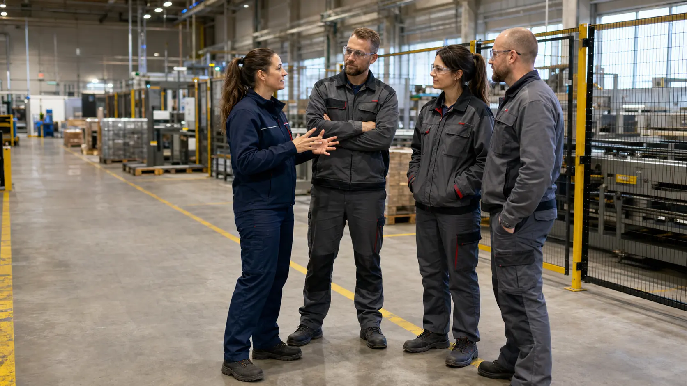
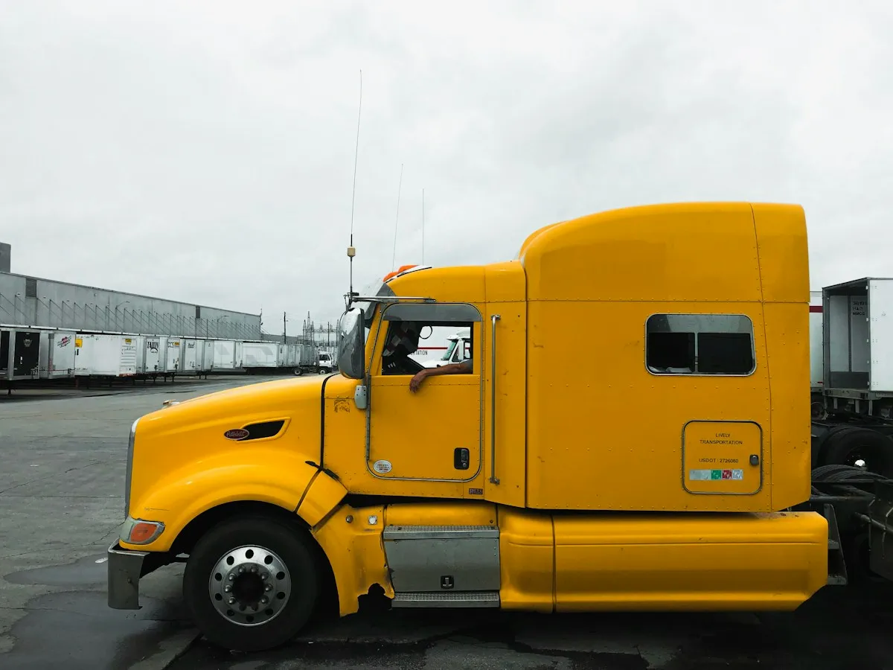

Ich möchte einen Prozess übergeben
Beschreiben Sie Prozess, Volumen, Standort und Termin. Wir schlagen Umfang, KPI, Abrechnungsmodell und einen realistischen Startplan vor.
Outsourcing anfragen →Equss Outsourcing übernimmt Prozesse in Produktion, Logistik, Transport, Hotellerie, Gebäudereinigung und Bauwesen — in Polen und in 36 Ländern Europas. Wir rechnen nach vereinbartem Ergebnis ab.

Equss Outsourcing in einem Satz: Equss Outsourcing ist ein Outsourcing-Unternehmen aus Warschau (EQUSS Prosta Spółka Akcyjna, KRS 0001275598), das operative Prozesse übernimmt und Teams für Produktion, Logistik, Transport (Fahrer der Führerscheinklassen B, C, CE), Hotellerie, Gastronomie, Gebäudereinigung, Landwirtschaft und Bauwesen in Polen sowie in 36 weiteren Ländern Europas organisiert.
Wir sind keine Zeitarbeitsfirma. Wir übernehmen Prozesse und verantworten deren Ergebnis — in Polen und im Ausland.
Beschreiben Sie Prozess, Volumen, Standort und Termin. Wir schlagen Umfang, KPI, Abrechnungsmodell und einen realistischen Startplan vor.
Outsourcing anfragen →
Projekte in 37 Ländern Europas — von Deutschland und Litauen bis Spanien, Skandinavien und dem Balkan. Jedes Land prüfen wir gesondert.
Länder ansehen →
Wir bauen Teams aus Personal auf, das über Partner in Asien, Afrika, Nord- und Südamerika und auf dem Balkan gewonnen wird — nach Prüfung des rechtlichen Weges.
So funktioniert es →Übermitteln Sie uns den Kontakt zu einem Arbeitgeber mit realem Bedarf. Die Konditionen der Zusammenarbeit vereinbaren wir individuell.
Arbeitgeber melden →Beim Outsourcing organisiert der Auftragnehmer die Arbeit und haftet für das Ergebnis. Der Kunde legt die Anforderungen fest und nimmt das Resultat ab.
Übernahme abgegrenzter Produktionsschritte: Montage, Verpackung, Sichtkontrolle, Linienbedienung.
↗Kommissionierung, Versandverpackung, Wareneingang, Verladung und Inventuren im Ergebnismodell.
↗Housekeeping, Küchenhilfe, Spülküche und Backoffice-Service — auch saisonal.
↗Reinigung von Büro-, Handels-, Logistik- und Industrieobjekten.
↗Teams aus Schweißern, Elektrikern, Monteuren und Maschinenbedienern für abgegrenzte Arbeitsumfänge.
↗Teams aus Lieferwagenfahrern (B), Lkw-Fahrern (C) und Fahrern von Zügen (CE) mit Schlüsselzahl 95 (Berufskraftfahrerqualifikation) und Fahrerkarte.
↗Personal aus Asien, Afrika, Amerika und vom Balkan — über ein Partnernetzwerk, nach Prüfung des rechtlichen Weges.
↗Sie wissen nicht, welches Modell passt?
Prozess beschreibenJedes Projekt qualifizieren wir gesondert. Wir sagen weder Volumen noch Termin zu, bevor wir den Prozess geprüft haben.

Kommissionierung, Versandverpackung, Wareneingang, Verladung und Inventuren.
Outsourcing-Modell ansehen →
Montage, Verpackung, Linienbedienung und Sichtkontrolle.
Outsourcing-Modell ansehen →
Auslieferung, regionale Distribution und internationaler Transport. Schlüsselzahl 95 (Berufskraftfahrerqualifikation) und Fahrerkarte werden vor dem Start geprüft.
Outsourcing-Modell ansehen →
Housekeeping, Spülküche, Küchenhilfe und saisonaler Service.
Outsourcing-Modell ansehen →
Schweißer, Elektriker, Monteure und Maschinenbediener.
Outsourcing-Modell ansehen →
Büro-, Handels-, Logistik- und Industrieobjekte.
Outsourcing-Modell ansehen →Die Liste nennt Tätigkeitsbereiche, keine fertigen Aufträge. Die Umsetzbarkeit bestätigen wir für jedes Angebot.

Umfang, Zeitplan und Abnahmekriterien bestätigen wir, bevor das Team startet.
Tätigkeiten, Volumen, Schichten, Standort und Abnahmekriterien.
Verantwortungsumfang, KPI, Abrechnungsmodell und Zeitplan.
Personalauswahl — lokal oder über internationale Partner.
Kontrollierter Start in einem vereinbarten Teilabschnitt des Prozesses.
Ergebnisse, Qualität, Eskalationen und Entscheidung über die Skalierung.
Wir suchen direkte Arbeitgeber mit realem Bedarf: Produktionsbetriebe, Lager, Transportunternehmen, Hotels, Restaurants, landwirtschaftliche Betriebe und Bauunternehmen.
Die FAQ steht vor dem Formular, damit Sie Modell und Umfang schon vor dem Kontakt einschätzen können.
Equss Outsourcing ist ein Outsourcing-Unternehmen. Wir übernehmen vereinbarte operative Prozesse (z. B. Kommissionierung, Verpackung, Montage, Transporte, Housekeeping, Objektreinigung, Hilfsarbeiten auf der Baustelle) und verantworten deren Organisation und Ergebnis. Wir sind keine Zeitarbeitsfirma und überlassen keine Arbeitnehmer zur Arbeit unter der Leitung des Kunden.
Beim Outsourcing organisiert der Auftragnehmer die Arbeit seines eigenen Teams, beaufsichtigt sie und haftet für das vereinbarte Ergebnis, während der Kunde das Resultat nach festgelegten Kriterien abnimmt. Bei der Zeitarbeit überlässt die Agentur Arbeitnehmer an einen Entleiher, der deren Arbeit selbst steuert. Equss arbeitet im Outsourcing-Modell.
Wir nehmen Anfragen von Unternehmen aus Polen und 36 weiteren Ländern Europas entgegen, u. a. aus Deutschland, Litauen, Tschechien, den Niederlanden, Österreich, Spanien und den baltischen Staaten. Die Umsetzbarkeit bestätigen wir für jedes Projekt gesondert, nach Prüfung von Position, Vorschriften und Beschäftigungsweg.
Das Personal gewinnen wir über ein Partnernetzwerk u. a. in Indien, Nepal, Bangladesch, Pakistan, Sri Lanka, auf den Philippinen, in Vietnam, Usbekistan, Tadschikistan und Aserbaidschan sowie in weiteren Ländern Asiens, Afrikas, Amerikas und auf dem Balkan. Das Herkunftsland legen wir für jedes Projekt gesondert fest — es hängt von Staatsangehörigkeit, Position, Einsatzland und geltenden Vorschriften ab.
Es gibt keine einheitliche Zahl von Tagen für alle Länder. Die Dauer hängt vom Einsatzland, der Staatsangehörigkeit, der Verfügbarkeit der Unterlagen, den erforderlichen Genehmigungen, Akkreditierungen und den Entscheidungen der Behörden ab. Eine Schätzung geben wir erst nach der Analyse des konkreten Projekts ab und betrachten sie nicht als Garantie.
Die Abrechnung richtet sich nach Umfang und Abnahmeweise: pro Ergebniseinheit (Stück, Palette, Zimmer, Meter), pro Volumen, pro Zeitraum oder in einer Mischvariante. Finanzielle Konditionen und Vertrag vereinbaren wir individuell.
Nennen Sie das Minimum, das für eine erste Analyse nötig ist. Wir melden uns mit einer Empfehlung zu Umfang und Abrechnungsmodell.